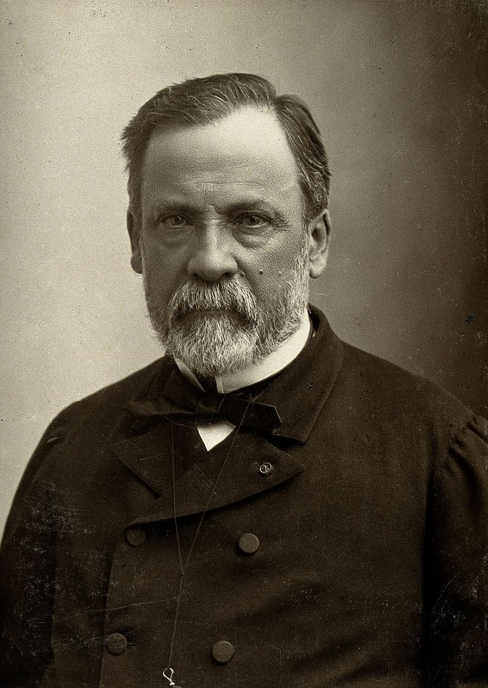

obrázek: https://marvin.milimetr.org/pisemka/pasteur.jpg
{kind=link}
text: https://marvin.milimetr.org/pisemka/pasteur.txt
Louis Pasteur
Louis Pasteur (27. prosince 1822 Dole – 28. září 1895 Villeneuve-l'Etang, Marnes-la-Coquette, pohřben v Paříži) byl francouzský biolog a chemik, jeden z nejvýznačnějších vědců 19. století. Stal se zakladatelem nových vědeckých oborů stereochemie, mikrobiologie a imunologie, objevil vakcíny proti sněti slezinné a vzteklině. Byl členem Francouzské akademie a řady dalších učených společností.
Pasteur se narodil 27. prosince 1822 v Dole ve východní Francii do rodiny chudého koželuha, který si představoval, že Louis bude pokračovat v jeho řemeslu. Ale synovy známky, jeho píle a silná vůle otce přesvědčily, aby změnil názor. Vystudoval chemii na École normale supérieure v Paříži, ve dvaceti letech promoval jako doktor přírodních věd. Po několika letech byl jmenován na katedru chemie na Štrasburské univerzitě, kde se setkal s Marií Laurentovou, dcerou rektora univerzity. Do svazku manželského vstoupili 29. května 1849 a měli celkem pět dětí, jen dvě z nich se ale dožily dospělosti, další tři zemřely na tyfus. To vedlo Pasteura ke zkoumání léčby tyfu.
Prokázal, že kvašení je životní projev mikroorganismů, že různé mikroorganismy způsobují různé typy kvašení, a vypracoval metodu tepelné sterilace, která brání nežádoucímu kvašení potravin – tzv. pasterizace.